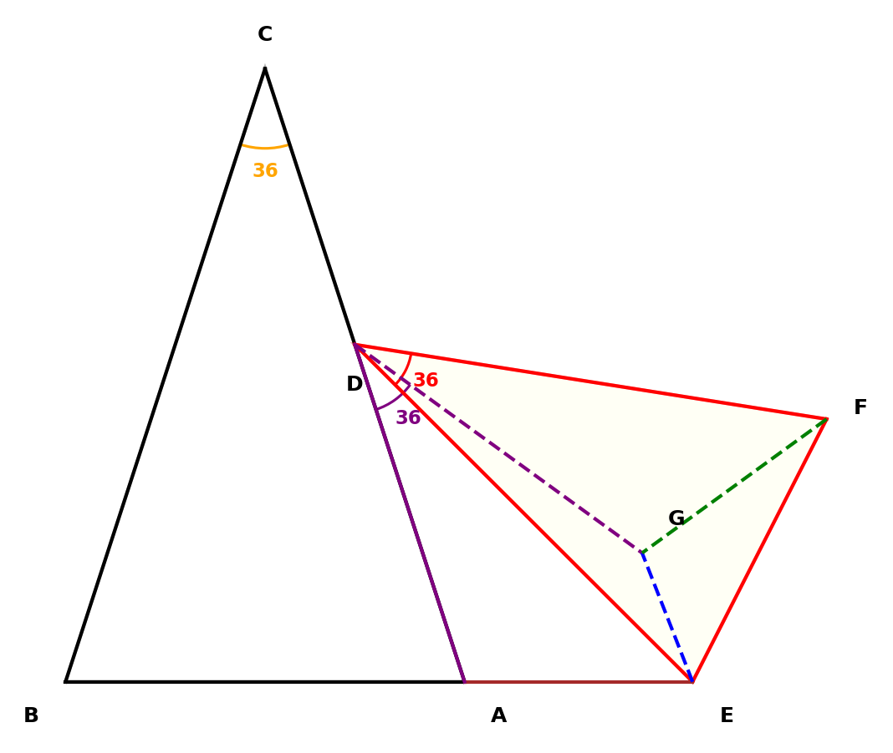
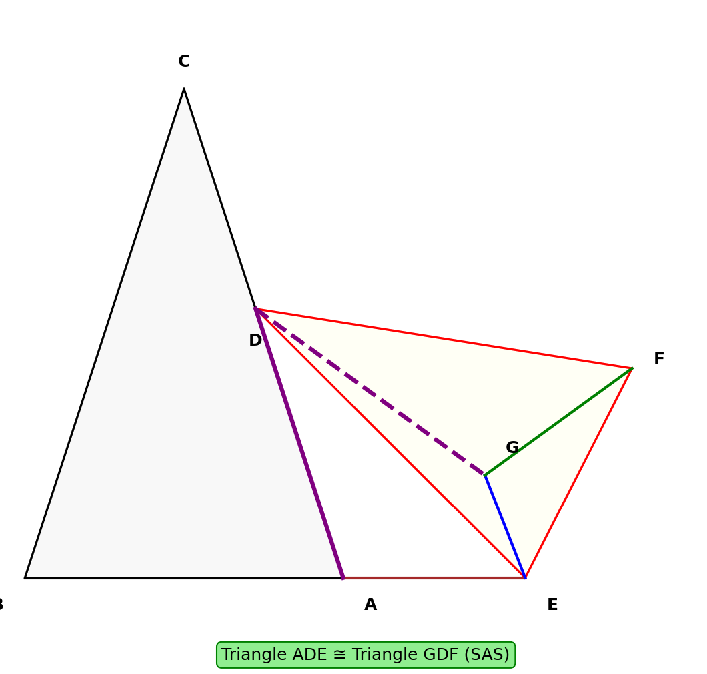
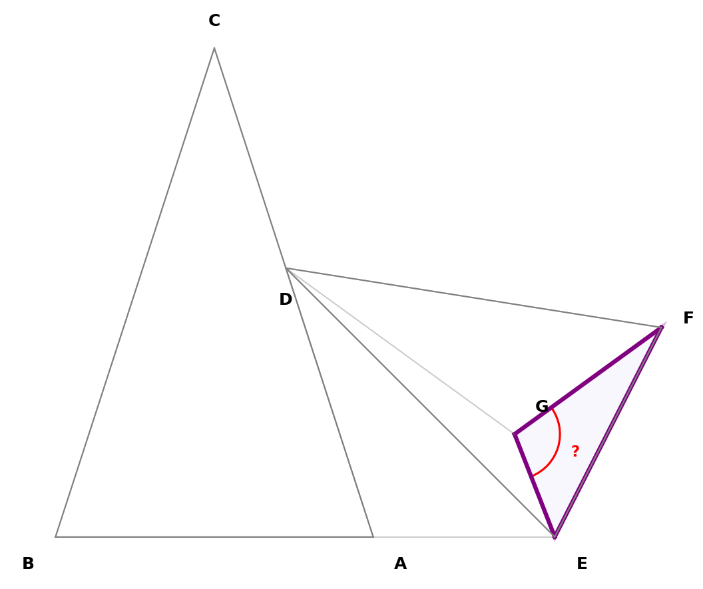
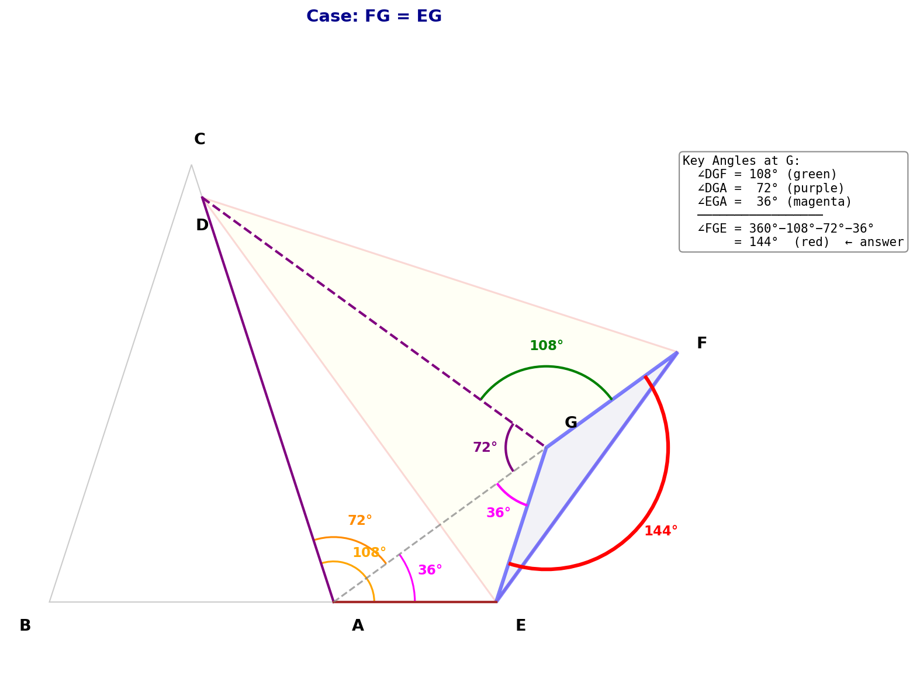
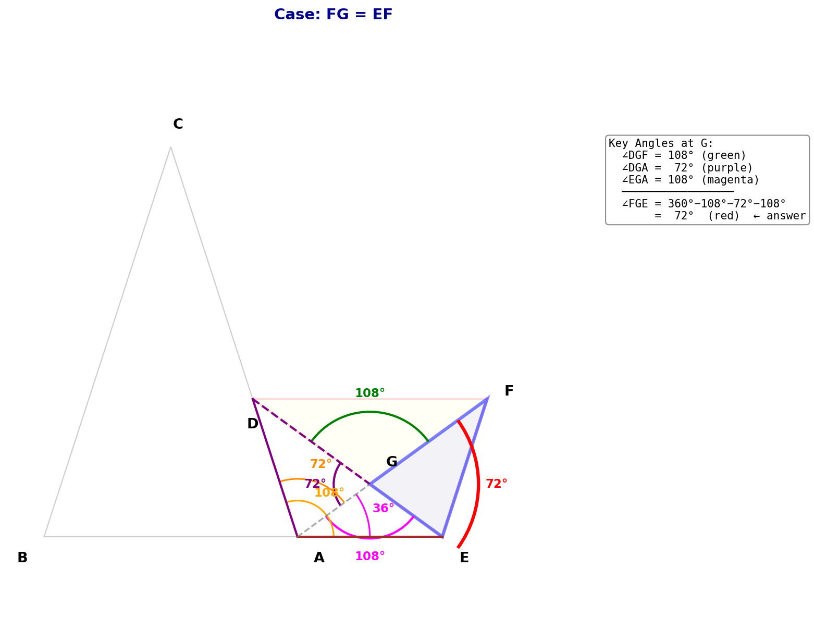

题目
已知△ABC和△EDF都是等腰三角形，且△ABC ≅ △FED，顶角∠C = 36°，等腰△EDF的顶点D在AC边上滑动，点E在BA边的延长线上滑动。将线段DA绕点D逆时针旋转36°得到线段DG，连接EG、FG，若△EGF是以FG为腰的等腰三角形，则∠FGE = ______。
📋 已知条件梳理：
- △ABC是等腰三角形，顶角∠C = 36°，底角∠A = ∠B = 72°
- △EDF是等腰三角形，△ABC ≅ △FED，所以∠D = 36°，∠E = ∠F = 72°
- D在AC上，E在BA延长线上
- DA绕D逆时针旋转36°得到DG
- △EGF是以FG为腰的等腰三角形

分析三角形性质
💡 关键信息
从全等关系和等腰性质推导出所有角度。
△ABC中：
- ∠C = 36°（顶角）
- ∠A = ∠B = 72°（底角）
- AC = BC
△EDF中：
- ∠D = 36°（顶角）
- ∠E = ∠F = 72°（底角）
- ED = FD
📝 注意对应关系
△ABC ≅ △FED 意味着：A↔F, B↔E, C↔D
寻找全等三角形
💡 核心突破
DA旋转36°得到DG，而∠EDF = 36°，这提示我们可以构造全等！

证明 △ADE ≅ △GDF：
条件1：DA = DG（旋转性质）
条件2：DE = DF（等腰△EDF）
条件3：∠ADE = ∠GDF
∵ ∠ADG = 36° = ∠EDF
∴ ∠ADG - ∠EDG = ∠EDF - ∠EDG
即 ∠ADE = ∠GDF
∴ △ADE ≅ △GDF（SAS）
全等推论：
- AE = GF
- ∠DAE = ∠DGF
计算∠DAE
💡 关键观察
E在BA的延长线上，所以∠DAE与∠BAC互补。

计算过程：
∵ E在BA的延长线上
∴ ∠DAE = 180° - ∠BAC
∵ ∠BAC = 72°
∴ ∠DAE = 180° - 72° = 108°
推论：
由△ADE ≅ △GDF，得∠DGF = ∠DAE = 108°
分析等腰△EGF
💡 分类讨论
"以FG为腰"意味着FG = EG 或 FG = EF，两种情况。
情况一：FG = EG
∵ AE = GF（全等）且 FG = EG
∴ AE = EG
∠EAG = ∠DAE-∠DAG = 108°-72°=36°
AE=EG,△AEG顶角在E:∠AEG=108°,底角∠EAG=∠EGA=36°
∠FGE = 360°-108°-72°-36° = 144°
情况二：FG = EF
∵ AE = GF（全等）且 FG = EF
∴ AE = EF（△AEF等腰）
关键：A、G、F三点共线
∴ ∠GFE = ∠AFE = ∠GAE
∠GAE = ∠DAE−∠DAG = 108°−72° = 36°
△EGF等腰⇒∠FGE=(180°−36°)/2 = 72°
情况一(FG=EG):∠FGE=144° | 情况二(FG=EF):∠FGE=72°
答案与总结
∠FGE = 144°（FG=EG时）或 72°（FG=EF时）
情况一：FG = EG

情况二：FG = EF

🎯 解题关键
- 利用旋转构造全等三角形
- 36°角的巧妙运用
- 等腰三角形的分类讨论
📐 角度关系
- 36°-72°-72°黄金三角形
- 补角关系：108° = 180° - 72°
- 等腰三角形底角相等